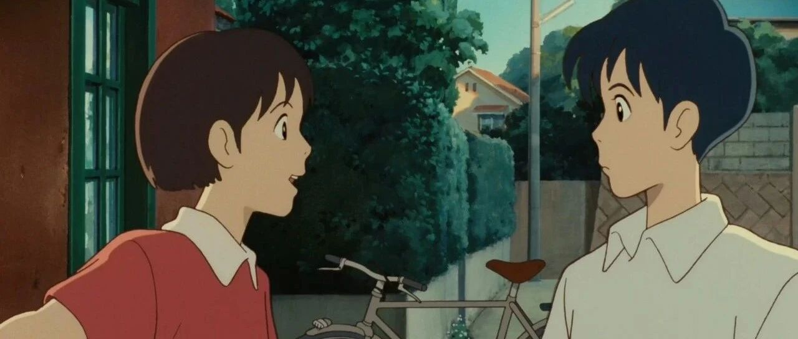

你错过这5个TED演讲，我会很心痛！
点击关注秋秋很开心
每周一篇好用APP、学习、成长干货

图：@网络
文：@秋秋
大家好，我是秋秋呀。
我发现！看TED演讲真的能让你快速进入状态。
下面这5个TED演讲，你错过我真的会心痛～
01
《如何掌控你的自由时间》

这篇演讲真的很火!
能教你克服不能早起的困难，还教你怎么把时间花在有意义、重要的事情。
里面有一些具体的方法，比如：分析什么是重要的事情、列出3-5个年目标，充分利用碎片化时间等等。

总之看完，你会get很多具体方法。
都说自律才能自由，只有会利用时间的人，才能创造更多财富。
02
《敢于不同意，去怀疑的勇气》

生活中，我们大多数人都会自然而然地回避矛盾。
但是Margaret Heffernan为我们展示，好的怀疑精神对于进步很关键。
甚至我们经历的大多数灾难，其实大多都不是由个人引起的，而是从组织而来的 。
Margaret Heffernan的演讲风格、语速、声音，我个人都很喜欢。
有时候组织也会惧怕思考，所以，有怀疑精神的个人，非常可贵！
03
《脆弱的力量》

真正的强大，是敢于面对不完美的自己。
这也是TED史上最受欢迎的演讲之一。
布琳根据自己十二年的研究，消除了“脆弱是弱点”的习惯性思维。
实际上，接受脆弱才是衡量我们勇气的最精确尺度，它也是积极情感的诞生地。
比如，先说“我爱你”的那个人，实际上是更愿意投入去爱的，也是真正的接受自己。
04
《提升自信的技巧 》

自信是人生成功和幸福的先决条件，可很多人最大的问题就是不自信。
这篇TED演讲，会告诉你提升自信的具体方法，比如：
1、重复足量练习；
2、脑中有消极对话不奇怪；
3、远离那些拖你后腿的人；
4、写下值得自己骄傲的事；
这个演讲不仅对不自信的人有帮助，对于那些没有勇气、不知道自己喜欢做什么事情的人，也有帮助。
05
《如何找到喜欢的工作 》

你是你最常接触的5个人的平均值。
当你不知道自己想做什么的时候，可以去看看自己的偶像（喜欢的人），收集一下他们身上你最喜欢的发光点，不断记录。

而且，也许你不需要经常改变你的目标。
有一种捷径就改变你的周围环境，远离那些让你泄气的人。
找到自己喜欢的工作其实不难，看完这个视频就知道！

我自己看TED演讲的时候，是喜欢把原稿打印出来。不仅加深印象，对英语学习也有好处。
打印方法也很简单，包括怎么找原稿也会告诉大家。

想看可以评论区的扣1，我下期出个视频吧。
☕️ 更 多 内 容：


原创文章，转载请告知本人并标注来源
粉丝vx：qiuqiu5261（朋友圈更新日常）
商务合作：17865514429 （微信）
请注明来意 :)
@小红书：秋秋很开心
喜欢记得星标，让我们一起成长